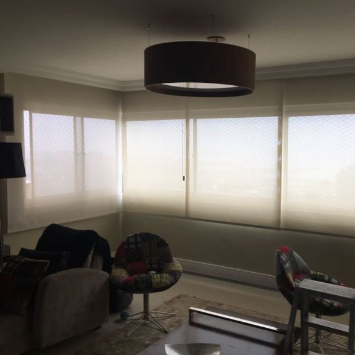
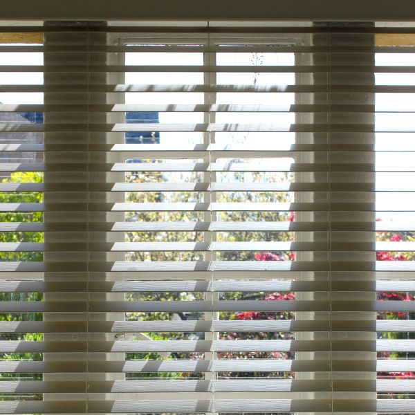
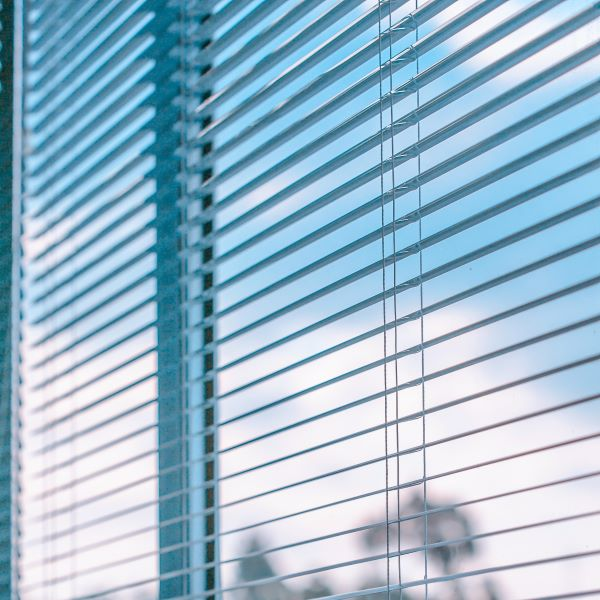

Nossos produtos
CORTINAS ROLÔ
Transforme seu ambiente com cortinas rolô, trazendo elegância, privacidade e controle da luminosidade. Escolha entre uma variedade de estilos, cores e texturas para criar um visual único e acolhedor em sua casa ou escritório. As cortinas de tecidos são amplamente utilizadas em salas de estar, quartos e salas de jantar, adicionando um toque de sofisticação e aconchego a esses espaços.
ver maisPERSIANAS DE MADEIRA
Adicione um toque de charme rústico com persianas de madeira. Além de proporcionarem privacidade e bloquearem a luz externa quando desejado, as persianas de madeira trazem aconchego e um estilo natural para qualquer espaço. Elas são especialmente populares em ambientes como salas de estar, cozinhas e escritórios, onde a estética rústica e acolhedora é valorizada.
ver maisPERSIANAS DE ALUMINIO
Adicione um toque de luxo, como persianas horizontais alumínio. Com resistência, durabilidade e beleza, essas persianas trazem sofisticação, estilo contemporâneo e minimalismo. Ideais para ambientes modernos e minimalistas, como lofts, escritórios corporativos e espaços comerciais de alto padrão, onde o destaque visual e durabilidade são essenciais.
ver maisCORTINAS DUO VISION
Versatilidade e controle total da luminosidade. As persianas Duo Vision combinam faixas translúcidas e opacas, permitindo ajustar a entrada de luz conforme desejado. Ideal para ambientes residenciais e comerciais, oferecendo privacidade e estilo contemporâneo. Seu design inovador se adapta a diferentes tipos de janelas, proporcionando uma solução moderna e funcional para seu espaço.
ver maisPERSIANAS ROMANA
Elegância clássica e praticidade em uma única persa. As persianas romanas se destacam por suas dobras horizontais que formam um visual sofisticado. Perfeitas para salas de estar e quartos, proporcionando um ambiente aconchegante com controle de luz e privacidade. Disponíveis em uma variedade de tecidos e padrões, permitem criar um estilo personalizado que combina com sua decoração.
ver maisPERSIANAS PAINEL
Modernidade e funcionalidade em grandes vãos. Os painéis persianas deslizantes são ideais para portas de vidro e janelas amplas. Com painéis individuais que se movem suavemente, permitem controlar a luminosidade e criar ambientes contemporâneos e práticos. Disponíveis em uma ampla gama de cores e texturas, como painéis persianas adicionam um toque de estilo e são mantidos ao seu espaço.
ver maisCORTINAS VERTICAL
Versáteis e elegantes, as persianas verticais são perfeitas para ambientes comerciais e residenciais. Com lâminas verticais que podem ser giradas e recolhidas, proporcionando controle de luz e privacidade. Disponíveis em diferentes materiais e cores, se adaptam a diversos estilos de decoração. Fáceis de limpar e duráveis, as persianas verticais são uma escolha prática e estilosa para suas janelas.
ver maisCORTINAS ESPECIAIS
Adicione um toque de charme rústico com persianas de madeira. Além de proporcionarem privacidade e bloquearem a luz externa quando desejado, as persianas de madeira trazem aconchego e um estilo natural para qualquer espaço. Elas são especialmente populares em ambientes como salas de estar, cozinhas e escritórios, onde a estética rústica e acolhedora é valorizada.
ver maisTELA MOSQUETEIRA
Adicione um toque de luxo, como persianas horizontais alumínio. Com resistência, durabilidade e beleza, essas persianas trazem sofisticação, estilo contemporâneo e minimalismo. Ideais para ambientes modernos e minimalistas, como escritórios corporativos e espaços comerciais de alto padrão. Destaque visual e durabilidade em uma única escolha.
ver mais